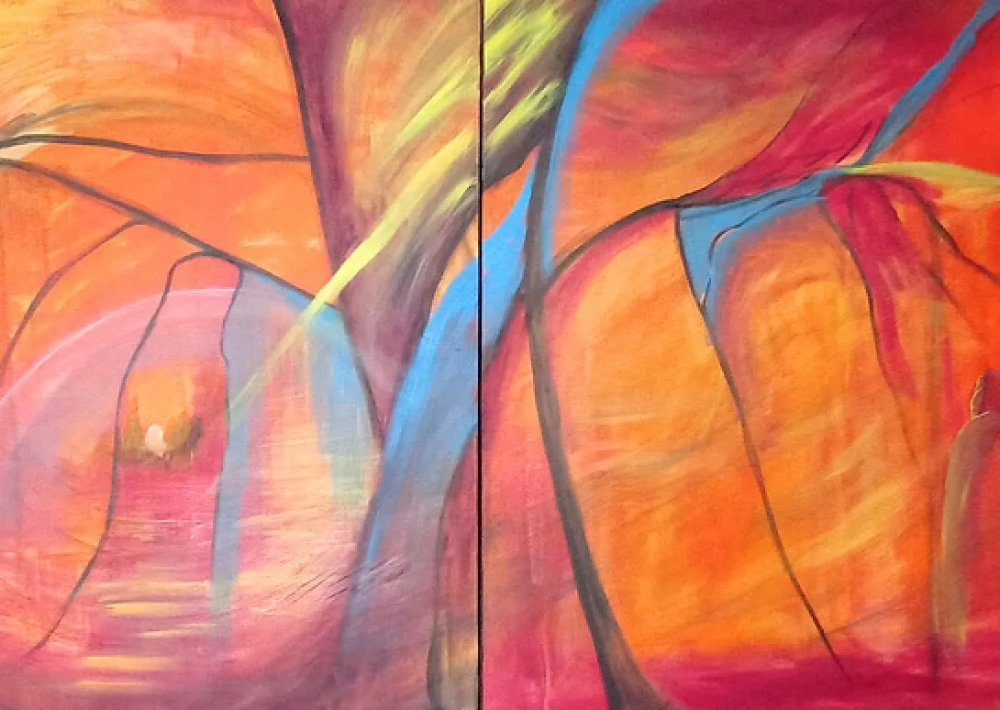

The artist
Parames McNeill
Abstract artist. Art educator. A painter of the space between the seen and the felt.

Dedicated to the intersection of spirituality and community service, I find profound inspiration in the realm of abstract art. My work is a deliberate fusion of diverse materials and processes, offering a canvas for the free spirit within to guide the creative journey.
Through a technique that prioritises fluid expression, each painting becomes a conduit for introspection and calm. Waves of inspiration move through the work, giving it a depth that reflects both the complexity of life and the spiritual dimensions that shape my vision.
Rooted in a commitment to service and spirituality, my art reaches beyond aesthetic appeal. Abstract forms and varied textures become a visual narrative, inviting viewers to explore the universal themes and emotions in each piece: the interplay between the ethereal and the tangible that speaks to our shared human experience.
Beyond the studio, I look for ways to bring art into community projects, bridging personal expression and communal enrichment, so that abstract work can become a catalyst for positive change and for awareness of the issues that matter.
My journey as an artist is not only a personal exploration but a deliberate effort to contribute to the collective consciousness. Through a disciplined yet liberating approach, I hope my work resonates deeply, fostering connection and inviting you on your own introspective journey.

“Through a disciplined yet liberating approach, my art strives to resonate on a profound level.”
My journey
Galleries & exhibitions
- 2013ExplorationFirst solo exhibition
- 2014Immerse YourselfSecond solo exhibition
- 2019MeditationThird solo exhibition
- 2019Kaleidoscope of LightsGroup exhibition
- —Black BoxGroup exhibition
- 2023ArtvoiceGroup exhibition
Art & service
Teaching since 2014
For Parames, art has always been something to share. She has taught more than 200+ classes to over 1,000+ participants, many of them children and adults who are often left out of art rooms.
Her own programmes, Art N Exploration and Art N Virtues, use painting to build confidence, calm and character. Today she brings that work to children through One Breath, an inclusive art programme with The Lodestone Centre in Subang Jaya.
She has worked with
- My Shining Star Foundation
- FLAME
- SOLS 24/7
- GOLD (Generating Opportunity for Learning Disability)
- National Cancer Society Malaysia